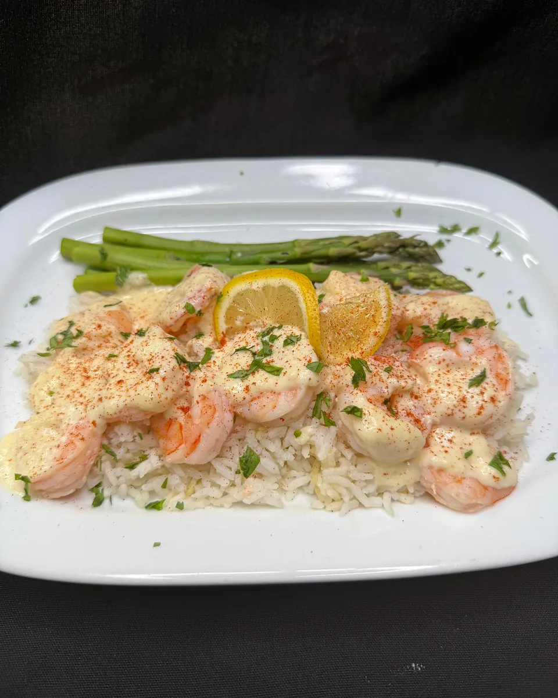
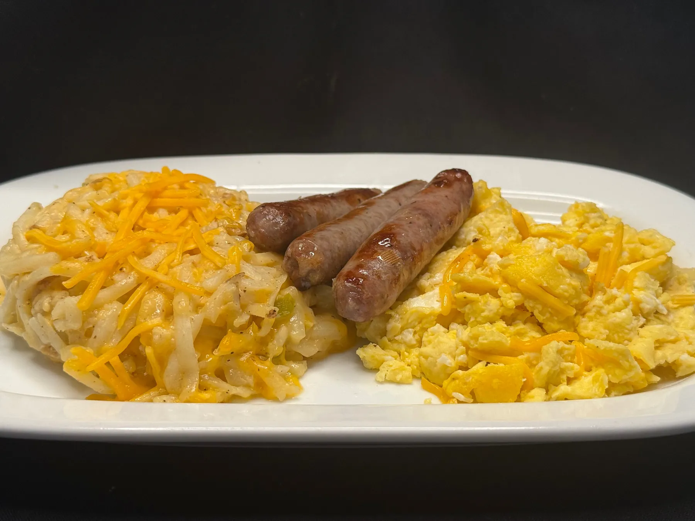
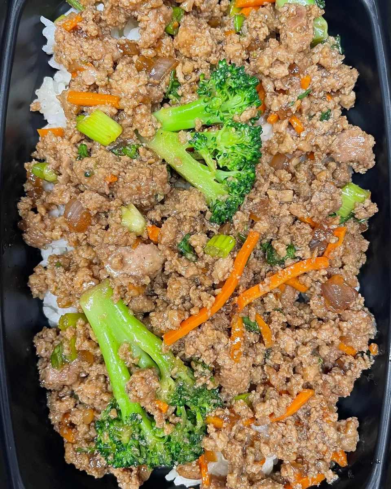
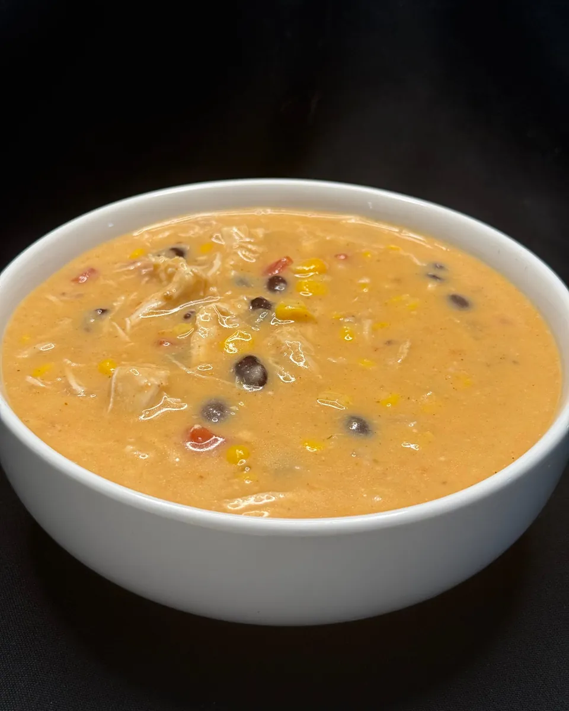
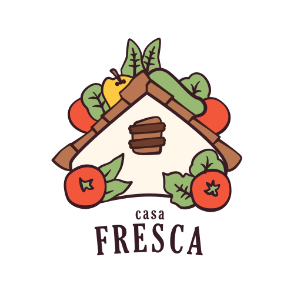
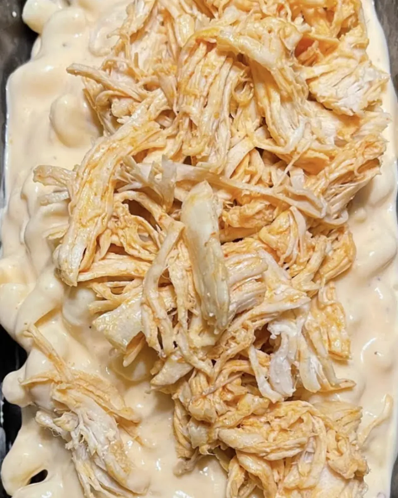

About Casa Fresca
Every meal tells a story.





Casa Fresca is Sergio Landaverde’s kitchen. He grew up in El Salvador surrounded by the aromas of fresh pupusas, tamales and stews, and brought that love of cooking to the United States.
01 · The training
Years in top restaurant kitchens
Sergio worked as a career chef in high-end restaurants, from mastering knife work to perfecting complex dishes. That’s where the precision comes from.
02 · The leap
Something of his own
He started Casa Fresca to blend that professional training with the soul of the food he grew up with, and to build a better life for his wife and three children. It began small and grew with the support of the community.
03 · Today
A family business, every week
Meals made every week, coolers stocked around town, and catering for everything from rehearsal dinners to company dinners for 160. “Meeting great new people is one of our favorite parts of owning this business.”
Our mission
“To deliver delicious, high-quality meals that nourish the body and soul.”
From Casa Fresca’s own About page
What we promise
Fresh, consistent, personal
Fresh, never frozen
Premium ingredients, locally sourced whenever possible, cooked fresh every week.
Made in a certified kitchen
Every meal is prepared and sealed for freshness.
Part of the family
“Sergio is a hard working, kind human being who treats all of his customers like family.” — Adam Welcher, Google review
In the community
Proud to pitch in
Casa Fresca was a Harvest Partner Sponsor of the 2026 Davidson Greenhouse Harvest Festival, September 26–27: a weekend of live music, local vendors, food and family fun.
Follow on Facebook